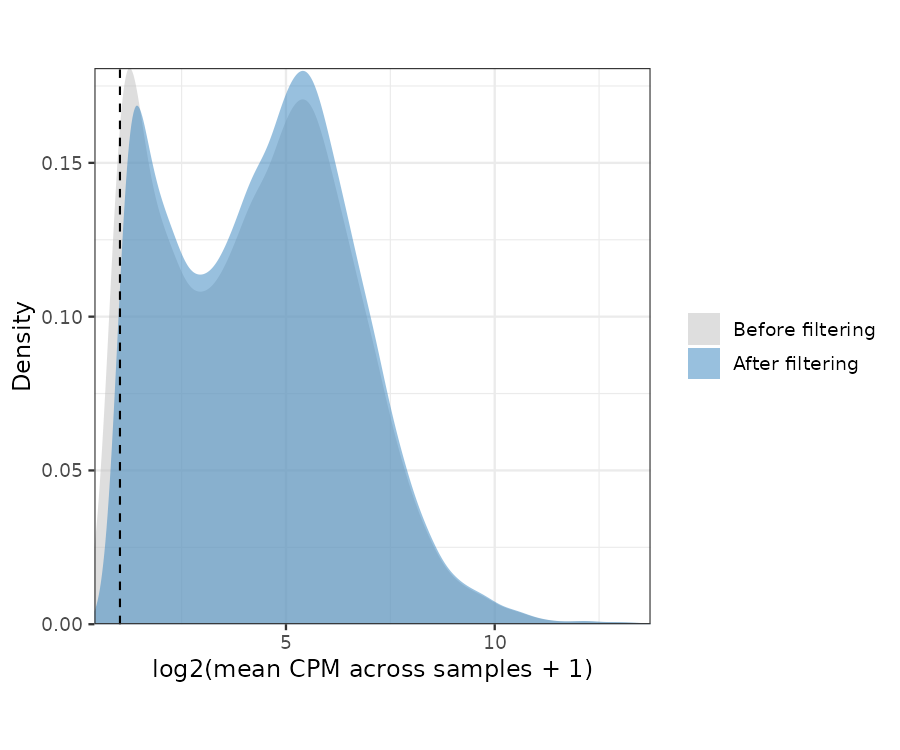
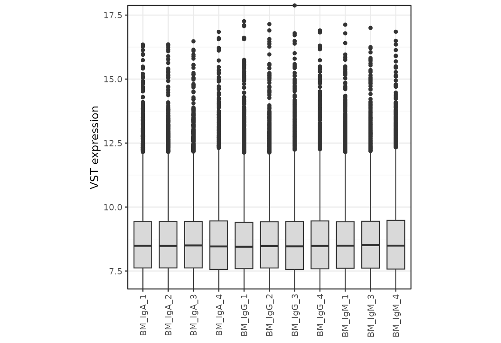
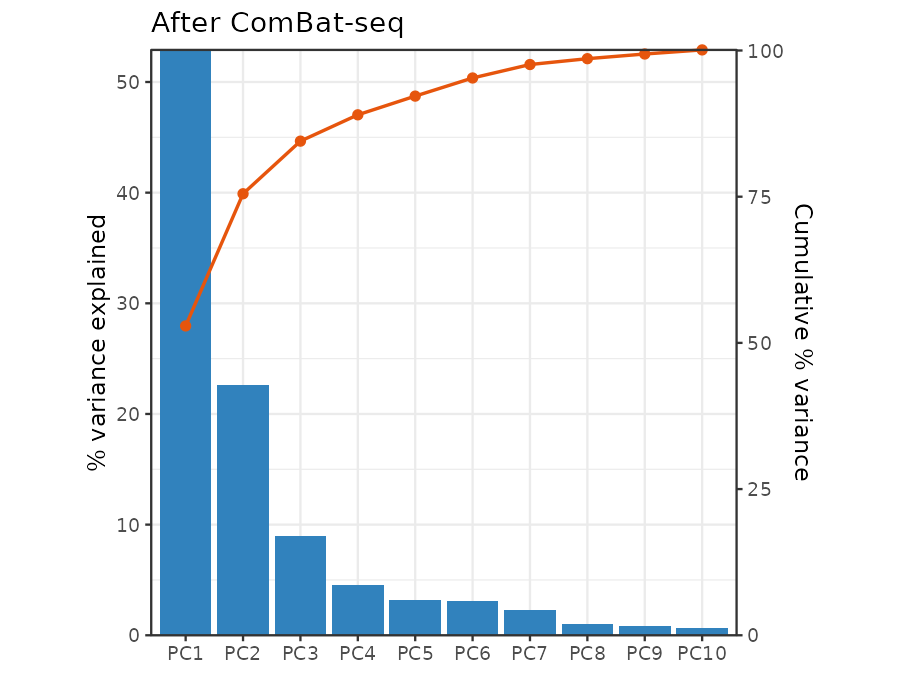
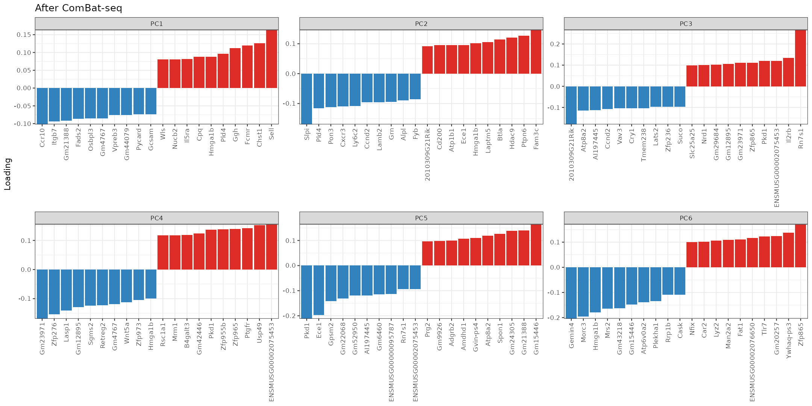
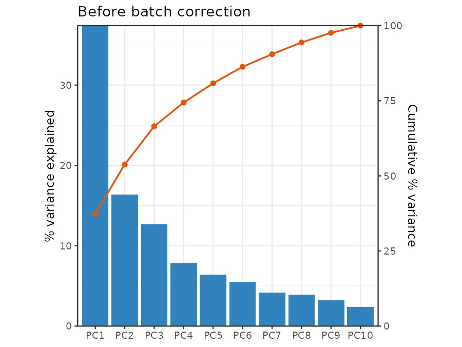
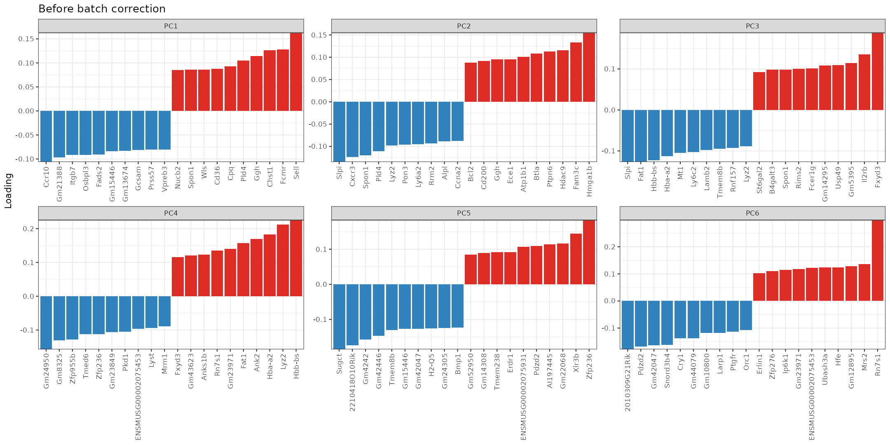
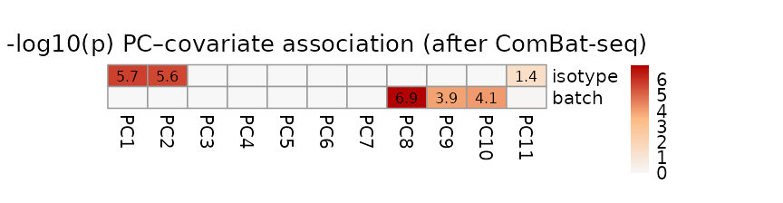
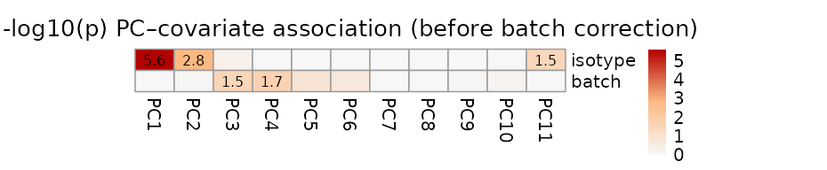
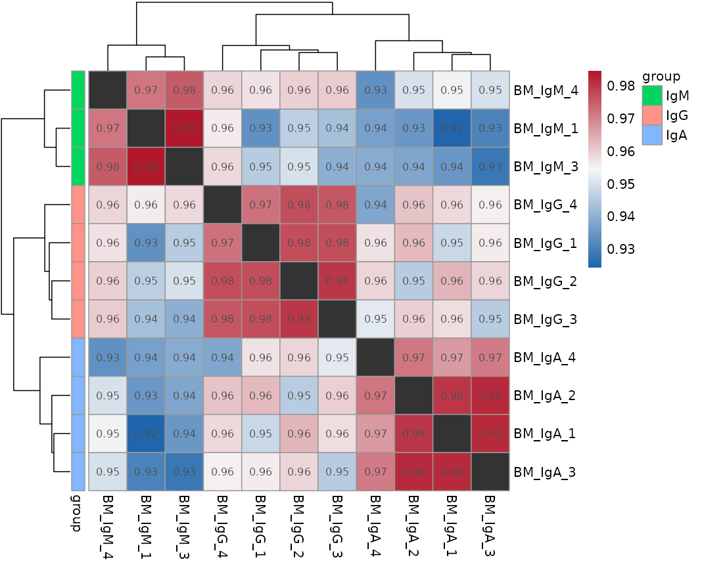
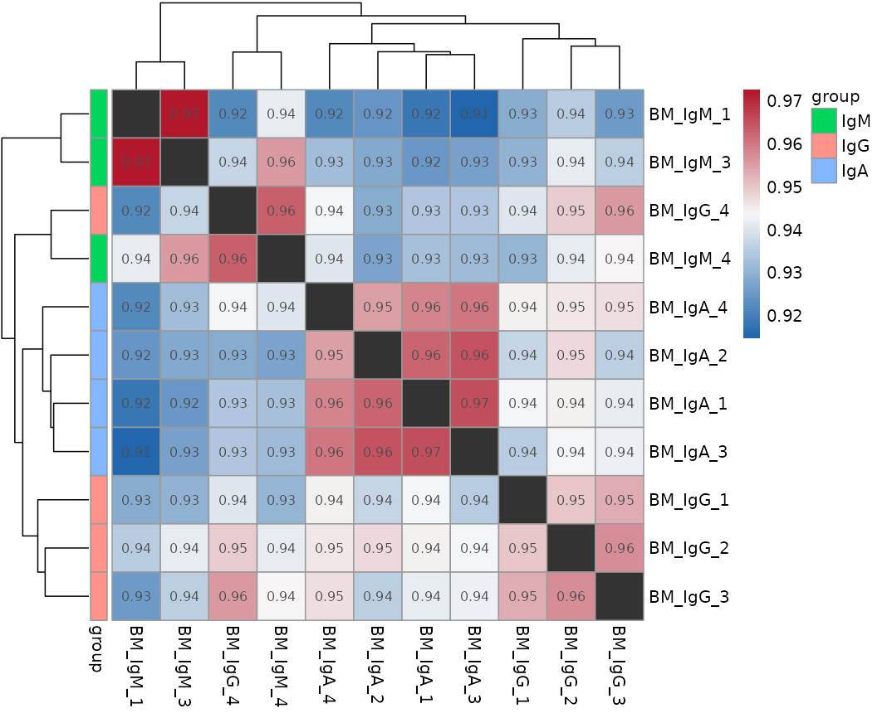

Per-sample detection depth on the input count matrix (before gene filtering): detected genes = genes with count > 0; total transcripts = sum of counts.
| Sample | Detected genes | Total transcripts |
|---|---|---|
| BM_IgA_1 | 14449 | 28,803,651 |
| BM_IgA_2 | 14460 | 26,876,313 |
| BM_IgA_3 | 14473 | 28,924,431 |
| BM_IgA_4 | 14431 | 29,708,137 |
| BM_IgG_1 | 14389 | 20,185,146 |
| BM_IgG_2 | 14476 | 22,160,407 |
| BM_IgG_3 | 14379 | 23,729,749 |
| BM_IgG_4 | 14432 | 22,525,681 |
| BM_IgM_1 | 14443 | 28,269,954 |
| BM_IgM_3 | 14490 | 30,767,945 |
| BM_IgM_4 | 14471 | 28,973,814 |
Genes removed at each QC step:
| Step | Genes before | Genes removed | % removed | Genes after |
|---|---|---|---|---|
| Input | 14631 | 0 | 0.00% | 14631 |
| Mitochondrial gene removal | 14631 | 20 | 0.14% | 14611 |
| VDJ gene removal (BCR) | 14611 | 326 | 2.23% | 14285 |
| Low-expression gene removal (CPM percentile) | 14285 | 715 | 5.01% | 13570 |
Low-expression filter: removed every gene with no reads in any sample, then the bottom 5% of the remaining (expressed) genes by mean CPM across samples.
Reproduce library QC with this package module:
dds_qc <- run_qc(dds, var = "condition", filter_method = "cpm")Distribution of the per-gene filtering statistic before and after low-expression removal, overlaid on the same axes. The dashed line marks the expression cutoff.


Reproduce PCA + sample similarity with this package module:
distance_out <- run_distance_pca(dds_qc, var = "condition")Hover over a point to see its sample name. PCA/scree/loadings below are all computed on the batch-corrected matrix; batch correction is for visualization only and does not alter the DESeq2 design or differential expression results.


Shown for comparison against the batch-corrected PCA in the other tab. Hover over a point to see its sample name.


Association of the top 15 PC scores with sample covariates
(batch, grouping var, and time
when present for LRT). Colour = -log10(p) from ANOVA (factors) or
Pearson correlation (numeric); numbers are shown only for associations
with p < 0.05.
Computed on the batch-corrected PC scores (same matrix as the “After ComBat-seq” PCA tab).

Computed on the uncorrected PC scores (same matrix as the “Before batch correction” PCA tab).

Pairwise Spearman correlation between samples (colour scale spans the actual min/max off-diagonal correlation observed in this matrix; darker red = more similar, darker blue = less similar). The self-correlation diagonal carries no information and is blanked out (dark grey).
Spearman correlation after ComBat-seq (protecting the biological grouping variable). This is the same corrected matrix used for the PCA above and for the sample-level modules (WGCNA, GSVA, VIPER, decoupleR).

Spearman correlation on the uncorrected variance-stabilized matrix (no ComBat-seq).
